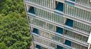

SCDA
建筑设计
室内设计
景观设计
关于SCDA
媒体报刊
新闻
新项目
联系方式
英文
建筑设计
/
项目概览
/
吉隆坡
所有项目
酒店及餐饮
公寓
Institutional
Mixed-use
别墅
Sales Gallery
项目概览
项目地图
建筑设计
/
项目概览
/
吉隆坡
项目
Sort by
按项目名称
Name
按项目地点
Location
按项目年份
Year

One KL
吉隆坡
2004
KL House
吉隆坡
建筑设计
室内设计
景观设计
关于SCDA
媒体报刊
新闻
新项目
联系方式
英文
ENG
中文
CHN